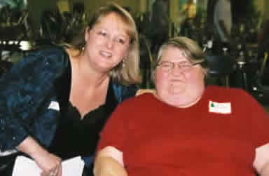

Circle of Friends
Our small group, Circle of Friends program, teams a group of volunteers with a person with disabilities. A Circle of Friends is a small gathering of individuals who build a relationship with a person who has a disability to celebrate his or her life.
Through stories, shared ideas, encouragement and outings, people feel valued and loved. They find themselves moving toward achieving their hopes and dreams. They learn that they matter to others. It is through such relationships with others that a person can celebrate his/her full identity and dignity and come to embrace the abundance of life.
While the focus of Circles is intended for the person with a disability for whom it has been called, Circle members find themselves amazed by how much their own lives become enriched through connections with others.
Circles meet as frequently as they choose. Each circle is as unique as the person for whom it has been created. Volunteer today for an enriching experience!
"It is God who has made us what we are and given us new lives from Christ Jesus; and long ago he planned that we should spend these lives in helping others." Ephes. 2:10